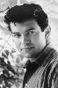
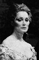

Also known as:I tre volti della paura (original title)
Country:Italy, 92 minutes
Spoken languages:
Genres:Horror
Director(s):Mario Bava
Writer(s):Mario Bava, Alberto Bevilacqua, Guy de Maupassant, Marcello Fondato, Anton Chekhov
Video Codec:Unknown
Number: 2216


Certification:
Storyline:
Three short tales of supernatural horror. In “The Telephone,” a woman is plagued by threatening phone calls. In "The Wurdalak,” a family is preyed upon by vampiric monsters. In “The Drop of Water,” a deceased medium wreaks havoc on the living.
Cast:  

Medium: Original DVD,
Loaned: No
Aspect ratio: Unknown